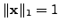
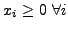
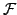
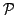
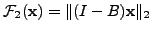
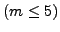
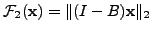
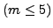
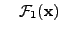
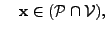

In many application areas including information retrieval, networking
systems and performance modeling of communication systems, the
steady-state distribution vector of an irreducible Markov chain is of
interest, and it is often difficult to compute. The steady-state vector
is the solution to a nonsymmetric eigenproblem with known eigenvalue,
, subject to the probability constraints
 and
, where  is a column-stochastic matrix. A
relatively new approach to solving these eigenvalue problems has been the
application of multigrid techniques. Recently, scalable multilevel
methods based on smoothed aggregation [2] and algebraic
multigrid [1] were proposed to solve such problems. The performance of
these methods was investigated for a wide range of numerical test
problems, and for most test cases, near-optimal multigrid efficiency was
obtained.
is a column-stochastic matrix. A
relatively new approach to solving these eigenvalue problems has been the
application of multigrid techniques. Recently, scalable multilevel
methods based on smoothed aggregation [2] and algebraic
multigrid [1] were proposed to solve such problems. The performance of
these methods was investigated for a wide range of numerical test
problems, and for most test cases, near-optimal multigrid efficiency was
obtained.
In [3], it was shown how the convergence of these multilevel methods can
be accelerated by the addition of an outer iteration, with the resulting
accelerated algorithm similar in principle to a preconditioned flexible
Krylov subspace method. The acceleration was performed by selecting a
linear combination of previous fine-level iterates to minimize a
functional

over the space of probability vectors
. Only the  most recent
fine-level iterates were used, where
most recent
fine-level iterates were used, where  is the window size. The
functional was taken as the 2-norm of the residual,
; consequently each acceleration step consisted of solving
a small
 quadratic programming problem, for which both
constrained and unconstrained variants were considered.
is the window size. The
functional was taken as the 2-norm of the residual,
; consequently each acceleration step consisted of solving
a small
 quadratic programming problem, for which both
constrained and unconstrained variants were considered.
In this talk we consider a different functional, namely, . This gives rise to the following nonlinear convex programming problem (CPP) which must be solved at each acceleration step:
| minimize |  | |
| subject to |  |
References